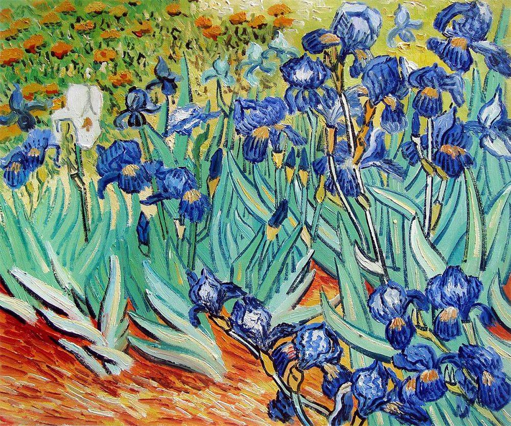

Vincent Van Gogh 1853–1890. Vincent Van Gogh was an artist of exceptional talent. Influenced by impressionist painters of the period, he developed his own instinctive, spontaneous style. Van Gogh became one of the most celebrated artists of the twentieth century and played a key role in the development of modern art.
He was born in Groot-Zundert, a small town in Holland in March 1853. His father was a Protestant pastor and he had three uncles who were art dealers. von goghHis early life seems generally to be unhappy, after a period of working in his uncle’s art dealership, he became frustrated and so became a Protestant minister. He became a preacher in the poor agricultural districts of Brabant. He empathised with the poverty of the inhabitants and began to share their poverty and rough living conditions. Despite trying to live according to the gospel message of poverty, the church authorities were displeased that Van Gogh seemed to be undermining the ‘dignity of the priesthood.’ He was relieved of his post and Van Gogh turned to art. Despite always disliking any formal training, he studied art in both Brussels and Paris. He began painting seriously, and in Paris was influenced by the new impressionist painters: Monet, Renoir and others. Financially helped by his close brother Theo, Van Gogh later travelled to Arles in the south of France, where he continued his painting – often outside – another feature of the impressionist movement.

It was during these last two years of his life that Van Gogh was at his most productive as a painter. He developed a style of painting that was quick and rapid – leaving no time for contemplation and thought. He painted with quick movements of the brush and drew increasingly avant-garde style shapes – foreshadowing modern art and its abstract style. He felt an overwhelming need and desire to paint.

In 1890, a series of bad news affected his mental equilibrium and one day in July, whilst painting, he shot himself in the chest. He died two days later from his wound.